3.1 软件环境与个人设置
画板子之前，先把“工作环境”弄顺手：在线版还是客户端、每一项设置是什么意思、怎么管理工程、怎么用版本和历史记录“后悔”、怎么和同学一起做、怎么把作品开源分享。本页讲软件环境和全部个人设置；工程管理与版本见 A-2，团队与开源见 A-3。
在线版与客户端#
本教程全程用的是浏览器在线版（pro.lceda.cn/editor），打开就能用，工程自动保存在云端，换台电脑登录还在。嘉立创EDA 也有 Mac 和 Windows 客户端，下载和安装方法见 0.3 注册登录与打开编辑器。
| 浏览器在线版 | 客户端 | |
|---|---|---|
| 安装 | 不用装，Chrome 打开就行 | 要下载安装 |
| 工程存在哪 | 云端（嘉立创服务器） | 可选在线（云端）或离线（本机）等模式，以客户端界面为准 |
| 快捷键冲突 | 会和浏览器抢一些快捷键（如 ⌘W 关标签页） | 冲突更少 |
| 适合 | 上手学习、在学校机房用 | 经常用、或网络不稳定时 |
个人设置大全#
「设置」菜单里有：系统、原理图/符号/仿真、PCB/封装、面板/面板库、常用字体、图纸、属性、快捷键、顶部工具栏、保存、工程设置。前十项打开的是同一个“设置”窗口，左边是分类树：
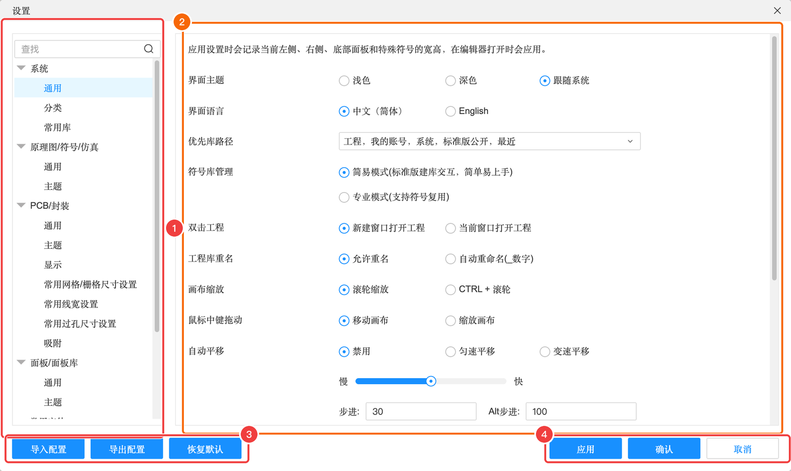
系统 → 通用#
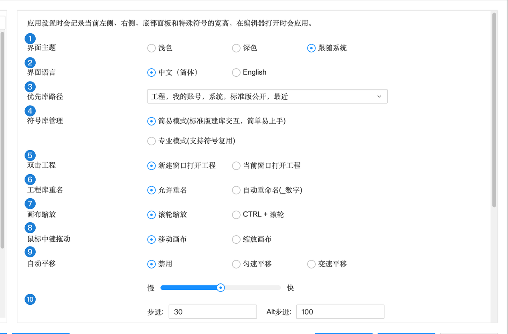
| 编号 | 选项 | 含义 | 推荐 |
|---|---|---|---|
| 1 | 界面主题 | 浅色 / 深色 / 跟随系统（跟着电脑的外观设置走） | 本教程截图用浅色 |
| 2 | 界面语言 | 中文（简体）/ English | 中文 |
| 3 | 优先库路径 | 放器件时按什么顺序在各个库里找同名器件：工程 → 我的账号 → 系统 → 标准版公开 → 最近 | 默认 |
| 4 | 符号库管理 | 简易模式（和标准版一样，简单）/ 专业模式（支持一个符号被多个器件复用） | 新手用简易模式 |
| 5 | 双击工程 | 在开始页双击工程时：新建窗口打开 / 当前窗口打开 | 默认 |
| 6 | 工程库重名 | 同名器件进工程库时：允许重名 / 自动在名字后加 _数字 | 默认 |
| 7 | 画布缩放 | 滚轮缩放 / CTRL + 滚轮。触控板用户建议改成 CTRL + 滚轮，捏合就是缩放（详见 0.4） | 看个人习惯 |
| 8 | 鼠标中键拖动 | 按住滚轮拖动时：移动画布 / 缩放画布 | 移动画布 |
| 9 | 自动平移 | 拖东西到画布边缘时画布是否自动滚动：禁用 / 匀速 / 变速，以及速度快慢 | 默认 |
| 10 | 步进 / Alt 步进 | 方向键挪动对象时每次挪多远 | 默认 |
| 面板自动收起 | 左 / 右 / 底部面板不用时自动收起，给画布腾地方 | 屏幕小可以勾 | |
| 复制复用模块 | 复制复用模块时：弹窗问 / 不复制 / 复制 | 默认 | |
| 放置待更新的库时 | 库里的器件有新版本时：弹窗选择 / 用新版本 / 用工程库里的旧版本 | 默认（弹窗） | |
| 无电气标识 | 无电气标识是否允许加入 BOM、更新到 PCB | 默认 | |
| 显示符号/封装更新对话框与提示 | 器件有更新时是否提示 | 保持勾选 |
系统 → 分类、常用库#
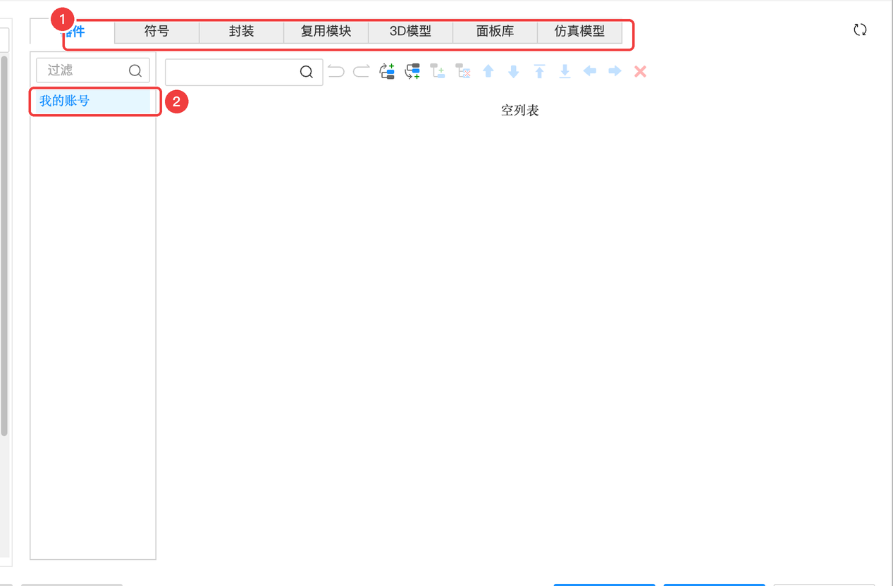
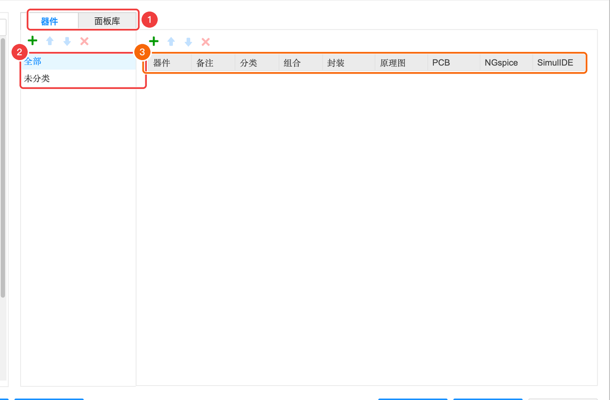
分类：上方是器件、符号、封装、复用模块、3D 模型、面板库、仿真模型几种库类型，下面是你账号下的分类树。自己建库多了以后用来整理，新手暂时用不到。常用库：左侧「常用库」面板显示的元件列表，可以增删，把你常用的电阻电容放进去，一点就能放置。
原理图/符号/仿真 → 通用#
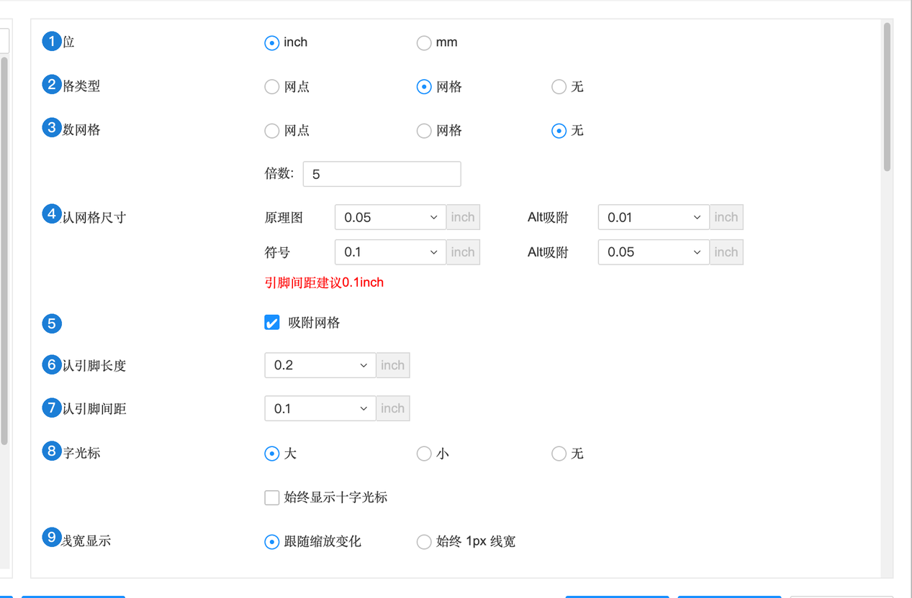
| 编号 | 选项 | 含义 | 推荐 |
|---|---|---|---|
| 1 | 单位 | inch / mm。原理图里元件引脚间距按 0.1 inch 设计，所以原理图一般用 inch | inch |
| 2 | 网格类型 | 画布背景显示网点 / 网格 / 无 | 默认 |
| 3 | 倍数网格 | 每隔几格画一条深色的线，方便目测距离 | 默认 |
| 4 | 默认网格尺寸 | 原理图 0.05 inch、符号 0.1 inch；Alt 吸附是按住 ⌥ 时的细网格 | 默认 |
| 5 | 吸附网格 | 放置和移动时自动对齐到网格。一定要开，不然引脚对不上导线 | 勾选 |
| 6 | 默认引脚长度 | 画符号时新引脚的长度 | 默认 |
| 7 | 默认引脚间距 | 画符号时引脚之间的距离，建议 0.1 inch | 默认 |
| 8 | 十字光标 | 光标是大十字（贯穿全屏，方便对齐）/ 小十字 / 无 | 看习惯 |
| 9 | 线宽显示 | 线宽跟随缩放变化 / 始终 1 像素 | 默认 |
| 指示线 | 选中器件或属性时显示一条线指向属性文字的归属 | 默认 | |
| 网络标签原点标识 | 网络标签连上导线后，原点小标记隐藏还是缩小 | 默认 | |
| 复制/剪切 | 是否需要先点一个参考点 | 默认 | |
| 单击导线选中 | 先选单段再选整段，还是反过来 | 默认 | |
| 移动 / 旋转符号，导线跟随方式 | 移动元件时导线跟着走（橡皮筋效果）还是断开；移动前按住 ⌃⌥ 可临时切换 | 默认跟随 | |
| 拖动网络名 | 拖网络名文字时是改网络名还是只调位置 | 默认 | |
| 默认网络名 | 没起名字的网络自动叫什么：导线 ID（如 $1N41）/ 位号+引脚编号 | 默认 | |
| 导线多网络 | 一根导线上允许同时挂多个网络名吗？允许（灵活）/ 禁止（严谨） | 默认 | |
| 网络名自动转大写 | 输入 vcc 自动变 VCC | 看习惯 | |
| 网络标识跨层连接 / 网络标签跨页连接 | 控制同名网络标识、网络标签在不同图页之间是否自动相连。直接决定多页原理图怎么连，见 4.2 | 默认 | |
| 总线生成网络类 | 画总线时自动把它的成员建成一个网络类 | 默认 | |
| 关联 | 网络标签旁显示“这个网络还出现在哪页哪个区域”（如 P1[A1]），单行 / 多行显示 | 默认 | |
| 多部件跨层 | 一个多部件器件（如四运放分成 4 个符号）的各部分能否放在不同层次 | 默认 | |
| 放置或粘贴器件自动分配位号 | 从末尾编号 / 填补空缺编号 / 不自动 | 默认 | |
| 放置器件位号前缀增加页码 | 位号变成 1R1、2R1 这样带页码 | 多页大图可以开 | |
| 交叉选择相关 | 原理图和 PCB 互相选中时是否自动移动画布、适应选中、让其他图元变暗 | 默认 | |
| 其他 | 符号编辑器显示标尺；鼠标悬浮导线高亮整个网络；旋转元件时自动调整属性位置；Ctrl 拖动复制；每页元件放置数量 | 默认 |
原理图 → 主题、PCB → 主题、面板 → 主题#
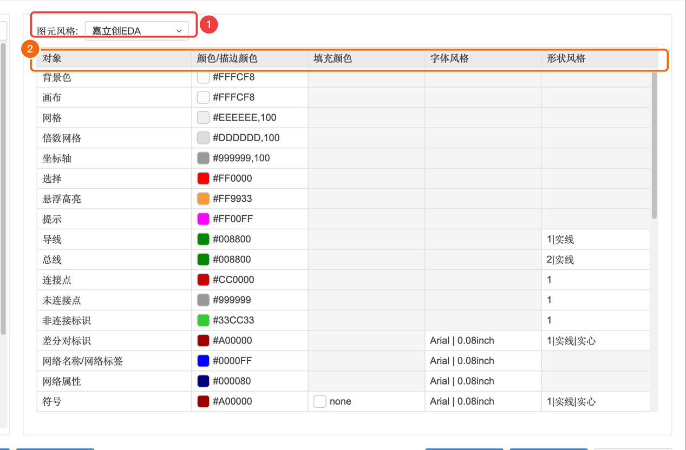
主题就是“配色方案”：画布背景、网格、导线、引脚、选中高亮……每样东西是什么颜色。PCB 主题还能设置每层的颜色和透明度。改乱了点「恢复默认」。打印成黑白时用不着改主题——导出 PDF 时直接选“白底黑图”（A-2 的导出文档）。
PCB/封装 → 通用#
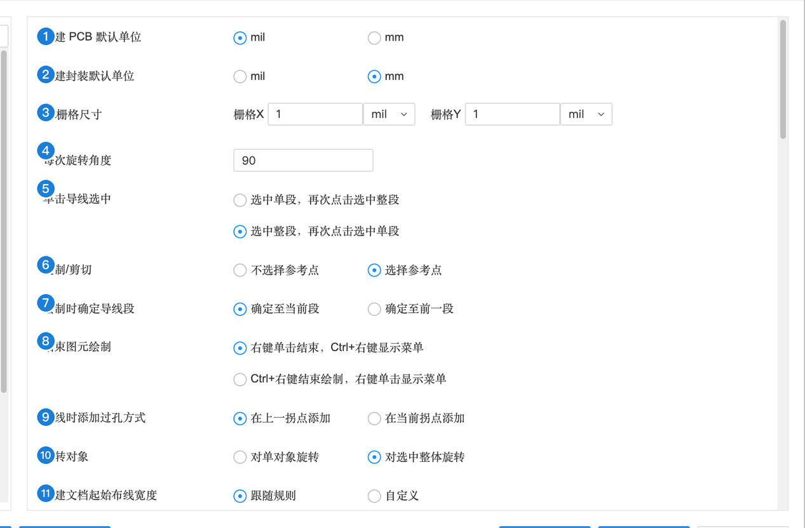
| 编号 | 选项 | 含义 | 推荐 |
|---|---|---|---|
| 1 | 新建 PCB 默认单位 | mil / mm | mm（国内工厂和本教程都用 mm） |
| 2 | 新建封装默认单位 | mil / mm | mm |
| 3 | Alt 栅格尺寸 | 按住 ⌥ 时使用的细栅格 | 默认 |
| 4 | 每次旋转角度 | 按空格转多少度 | 90 |
| 5 | 单击导线选中 | 先单段还是先整段 | 默认 |
| 6 | 复制/剪切 | 是否选参考点 | 默认 |
| 7 | 绘制时确定导线段 | 单击时把线确定到当前段还是前一段 | 默认 |
| 8 | 结束图元绘制 | 右键单击结束（⌃+右键出菜单）或反过来 | 默认 |
| 9 | 布线时添加过孔方式 | 打过孔时放在上一个拐点还是当前拐点 | 默认 |
| 10 | 旋转对象 | 选中多个时各自原地转 / 整体绕中心转 | 默认 |
| 11 | 新建文档起始布线宽度 | 跟随设计规则 / 自定义 | 跟随规则 |
| 元件属性默认字体 | 位号丝印的字体、线宽、字高 | 默认 | |
| 新建文档起始打孔尺寸 | 跟随规则 / 自定义 | 跟随规则 | |
| 移动元件 | 推挤（把挡路的挤开）/ 阻挡 / 忽略 | 默认 | |
| 绘制轮廓对象 / 布线时自动倒角 | 关 / 圆角 / 斜角，以及倒角半径 | 默认关 | |
| 布线相关 | 切层时优先放盲埋孔；打孔时自动切层；双击放过孔；移除回路时弹窗；开始/结束时自动扇出；自动结束布线；为自由导线分配网络；自动添加泪滴 | 默认 | |
| 拖动/移动 | Ctrl 拖动复制；拖焊盘/过孔吸附到中心；拖封装吸附到原点；吸附对齐到相邻焊盘边界；移动封装/过孔时导线是否跟随 | 默认 | |
| 放置或粘贴器件自动分配位号 | 同原理图 | 默认 | |
| 生成制造文件前检查网络连接 / DRC | 导出 Gerber 前先查一遍（A-10 里那个“是否先检查 DRC”的弹窗就是它） | 保持勾选 | |
| 使用嘉立创彩色丝印工艺 | 打开后可以做彩色丝印（收费工艺，用法见 6.3） | 默认关 | |
| 预览 3D 时自动生成元件 3D 模型 | 没有 3D 模型的元件按“高度”属性生成方块 | 默认 | |
| 自动重建铺铜区域 | 修改后自动重铺 | 看习惯（关掉时用 ⇧B 手动重建） | |
| 新建 PCB 使用模板 / 绘制区域后不打开属性弹窗 / 允许封装翻转 | — | 默认 |
PCB/封装 → 显示#
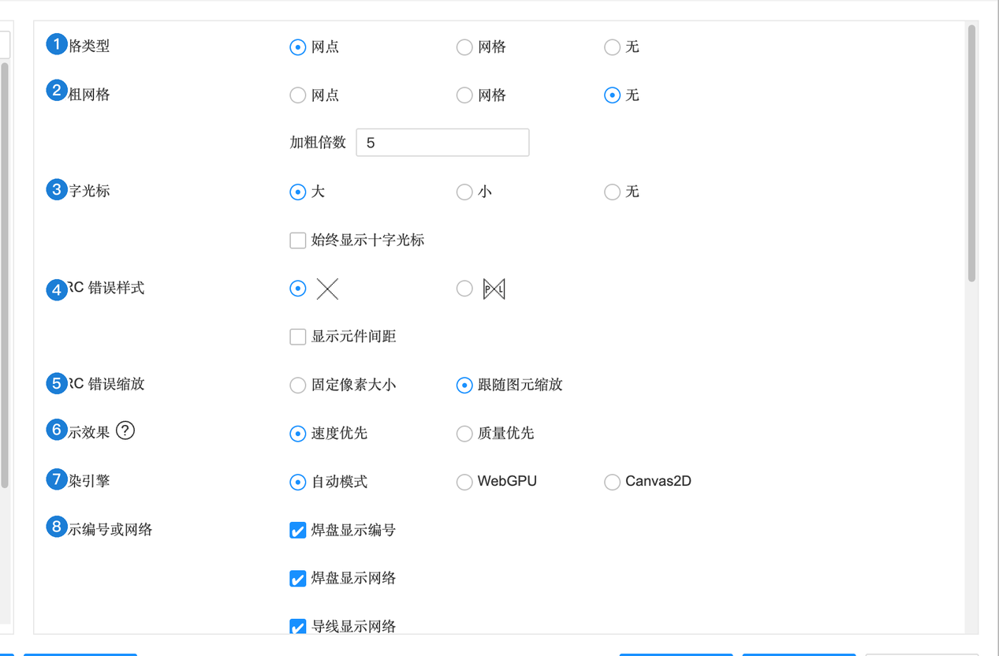
| 编号 | 选项 | 含义 | 推荐 |
|---|---|---|---|
| 1 | 网格类型 | 网点 / 网格 / 无 | 默认 |
| 2 | 加粗网格 | 每隔几格加粗显示 | 默认 |
| 3 | 十字光标 | 大 / 小 / 无 | 看习惯 |
| 4 | DRC 错误样式 | DRC 出错的位置用 × 还是别的符号标出；是否显示元件间距 | 默认 |
| 5 | DRC 错误缩放 | 错误标记固定大小 / 跟着缩放变 | 默认 |
| 6 | 显示效果 | 速度优先 / 质量优先。电脑卡就选速度优先 | 默认 |
| 7 | 渲染引擎 | 自动 / WebGPU / Canvas2D。画面异常时可以换一个试试 | 自动 |
| 8 | 显示编号或网络 | 焊盘上显示编号、网络名；导线上显示网络名；过孔显示层对、网络。本教程截图里焊盘上的 “GND”“VCC” 就是这个 | 保持勾选 |
| 突出显示 | 手动高亮时非主体颜色变暗等 | 默认 | |
| 实时显示 | 布线时显示实时网络长度、差分对长度误差（B-3 里差分布线的那条提示）；绘制时使用动态输入框 | 默认 | |
| 鼠标悬停 | 悬停在网络/对象上时高亮、显示属性 | 默认 | |
| 交叉选择 / 其他 | 同原理图；显示缩放标尺；拖动网络图元时其他图元变暗；焊盘过孔选中透明度 | 默认 |
PCB → 常用网格 / 线宽 / 过孔尺寸、吸附#
这三页是三张“快捷列表”：顶部工具栏里网格尺寸、线宽、过孔尺寸的下拉菜单里出现哪些值。每行同时显示 mil 和 mm（如 10 mil = 0.254 mm、过孔 0.305/0.610 mm）。可以增删自己常用的值。
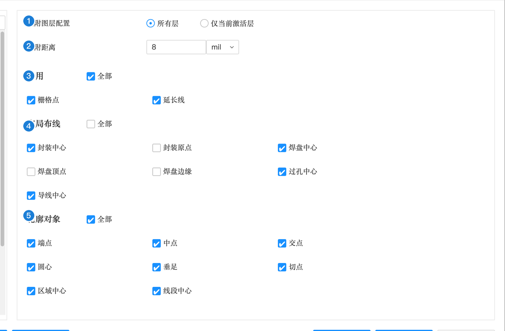
“吸附”就像磁铁：鼠标靠近这些特殊点时会被自动吸过去，方便精确对齐。觉得光标“乱跳”时，可以在这里关掉一些吸附点。
面板/面板库 → 通用#
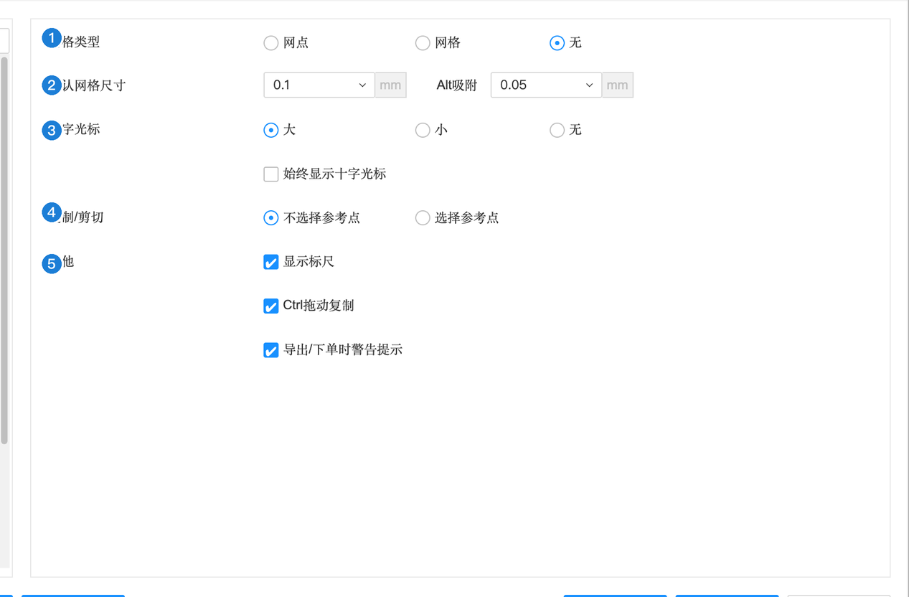
常用字体、图纸、属性、顶部工具栏#
| 页面 | 管什么 | 什么时候改 |
|---|---|---|
| 常用字体 | 文字字体下拉框里列出哪些字体（默认、宋体、黑体、隶书、楷体、仿宋、Arial、Times New Roman、Verdana）。想加别的字体，从电脑的字体列表（Mac 的“字体册”/ Windows 的“设置 → 个性化 → 字体”）里复制字体名称加进来 | 丝印想用特殊字体时 |
| 图纸 | 新建工程时默认用的图纸模板（边框、明细表位置、尺寸 A4、分区数量），以及标题栏里各字段（@工程名称、@更新日期、版本、公司、绘制、审阅……）是否显示和默认值 | 交作业要统一标题栏时 |
| 属性 | 每种属性（位号、名称、制造商、数据手册……）属于哪些对象、在画布上默认显示什么 | 一般不改 |
| 快捷键 | 查看和自定义快捷键 | 见 0.4 |
| 顶部工具栏 | 原理图 / 符号 / PCB / 封装 / 面板 / 仿真各自的顶部工具栏显示哪些按钮、什么顺序（左边可选项，右边已选项） | 想把常用功能放到工具栏上时 |
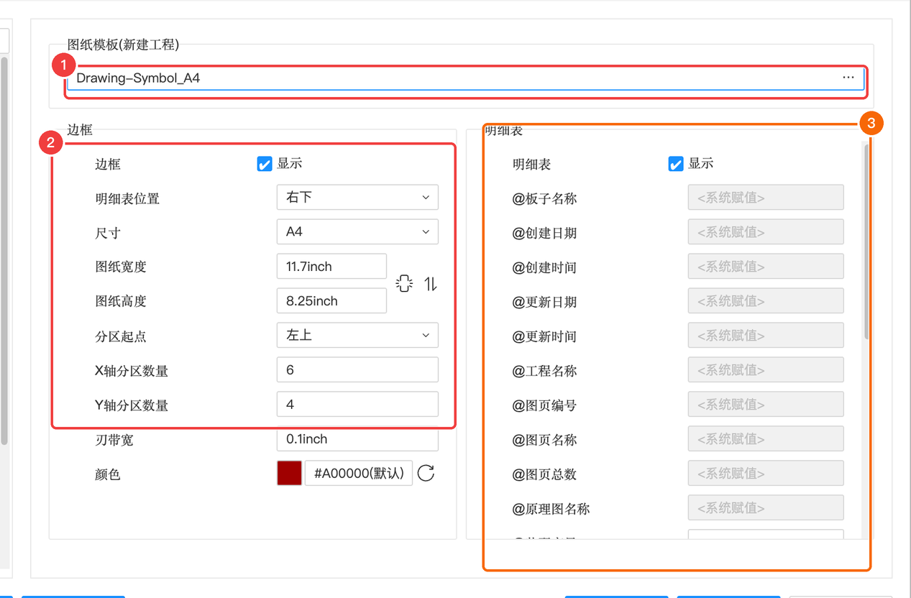
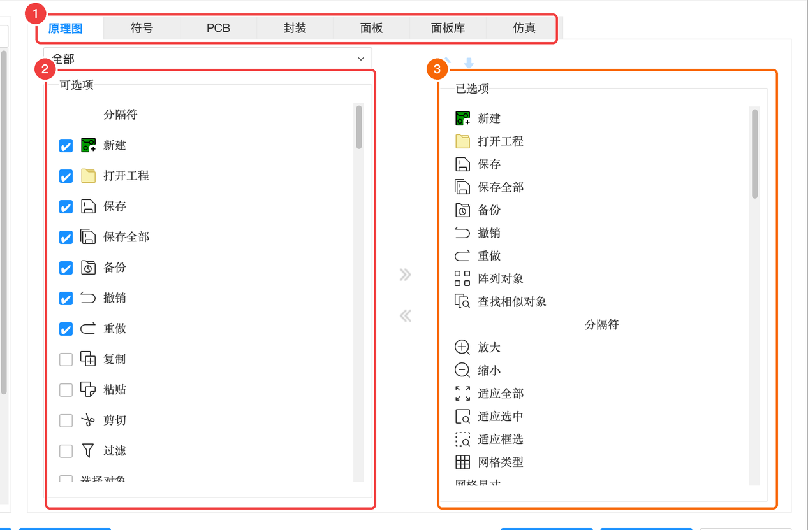
保存#
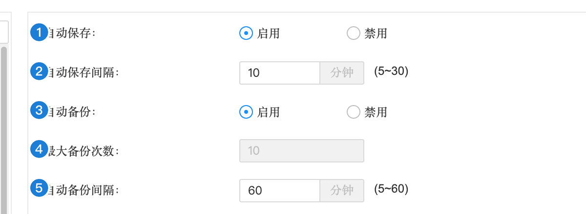
| 编号 | 选项 | 含义 | 推荐 |
|---|---|---|---|
| 1 | 自动保存 | 每隔一段时间自动保存 | 启用 |
| 2 | 自动保存间隔 | 5～30 分钟 | 10 |
| 3 | 自动备份 | 定期额外存一份备份（在「文件」→「工程备份」里找回） | 启用 |
| 4 | 最大备份次数 | 最多保留几份 | 默认 |
| 5 | 自动备份间隔 | 5～60 分钟 | 默认 |
快捷键#
快捷键写法、和浏览器 / 系统冲突的键、怎么在「设置」→「快捷键」里查看和修改，都在 0.4 键盘、鼠标与快捷键里讲过了（含互动键盘）。完整速查表见 附录：快捷键速查。